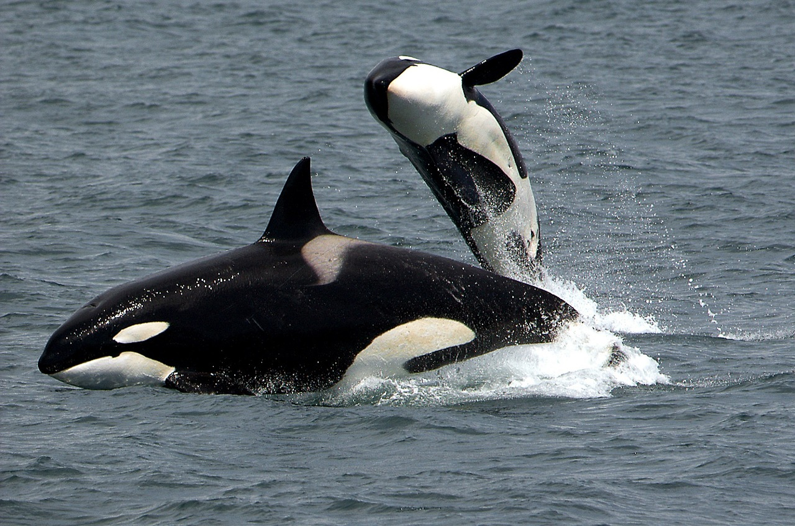

Whales
September 29,2023 by Rasheeda Francis
 Among the largest creatures to exist on the Earth are Whales.
They can weigh up to 200 tons and grow a length of up to 100 metres.
They can be found in oceans across the world including the Pacific and Atlantic Ocean.
Although there are various types of whales,the humpback whale, killer whale and
the blue whale are some of the most well-known speices.
Most of these specices participate in long distance migration travelling up to 12000 miles round -trip.
Whales tend to have a very long life span with some specices living up to 200 years.
The longevity of whales is influenced by various factors including availiablity of food,
ability to avoid pollution, impact of human activites such as pollution.
Numerous whale species are threaten by praticies such as commericial whaling ,habitat loss and ship strikes.
The protection of these majestic animals and the promotion of their longevity in the wild depends on conversation activities.